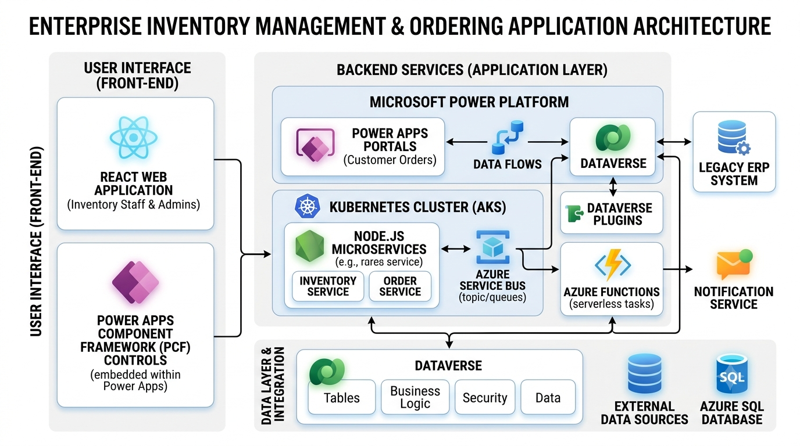
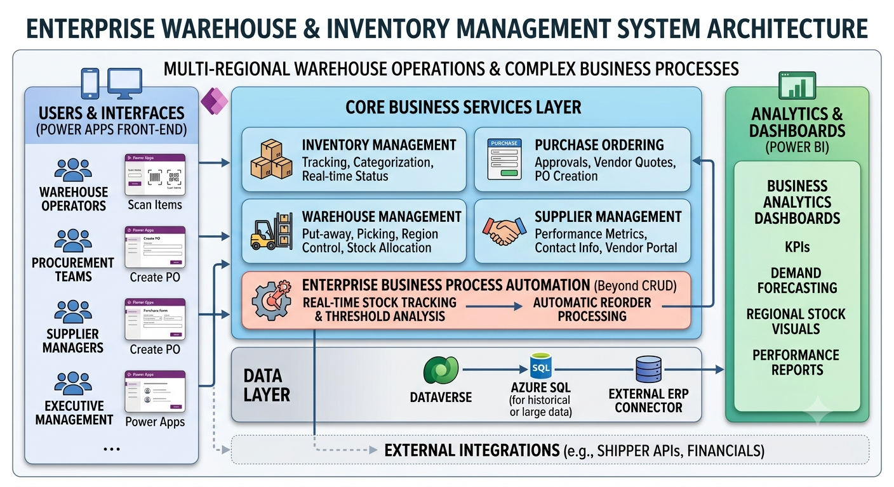
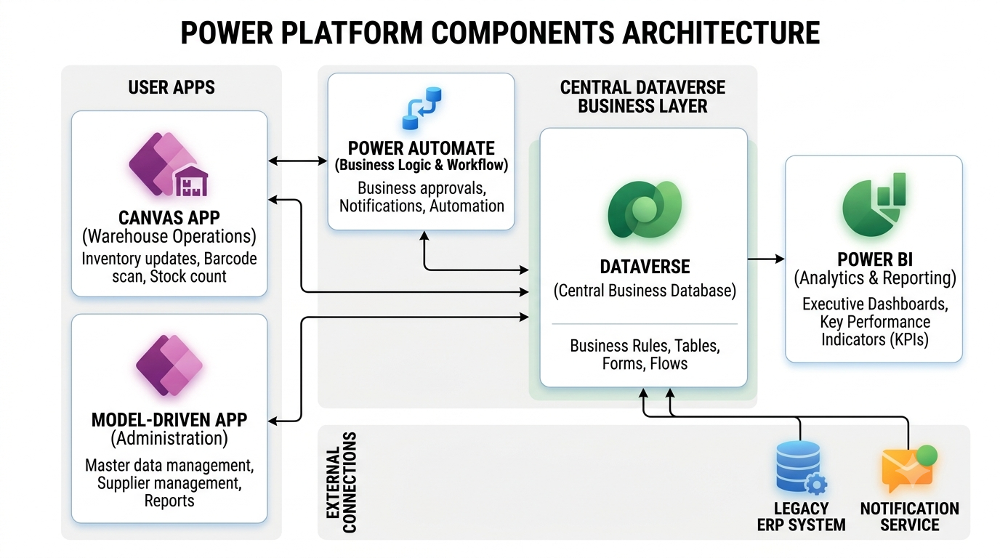
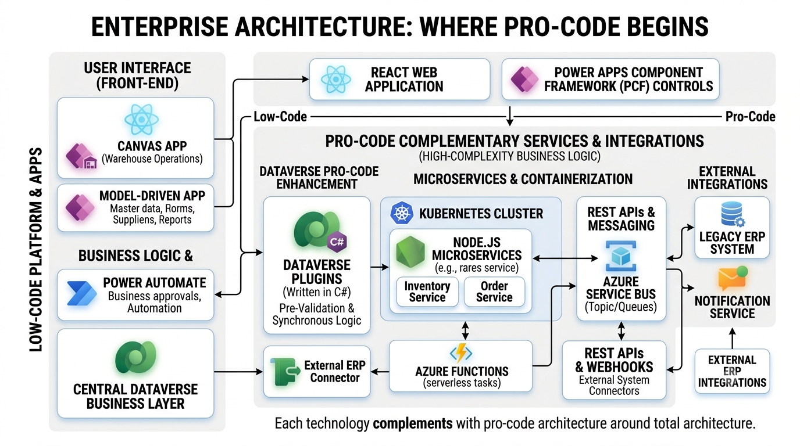
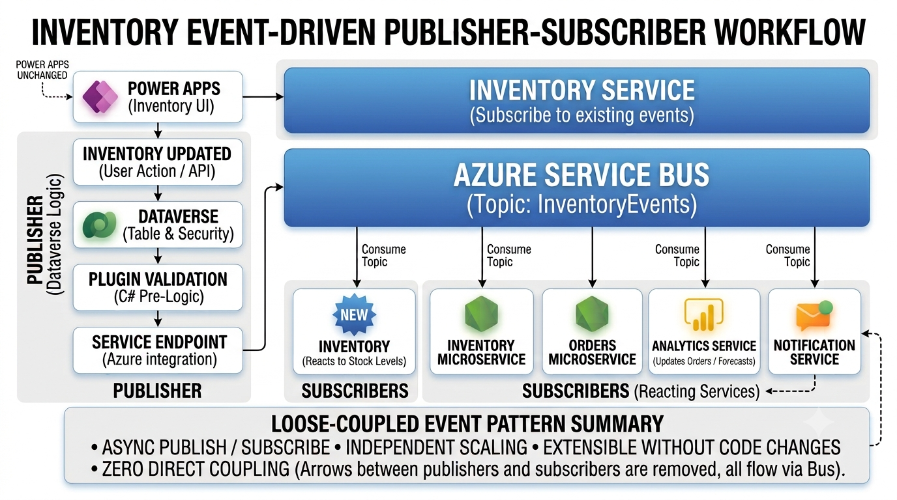
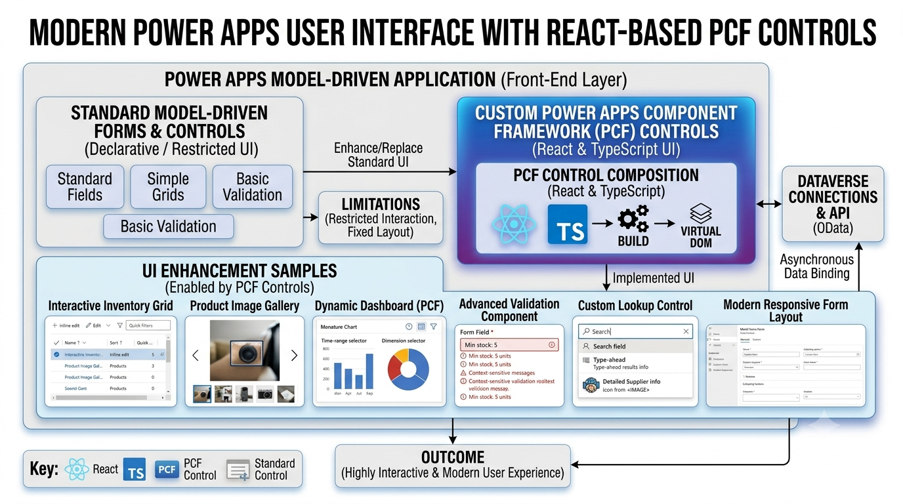

Introduction
Microsoft Power Platform is often viewed as a low-code platform used to rapidly build business applications. While that perception is partly correct, enterprise implementations rarely stop at low-code.
Modern organizations require scalable architectures capable of handling thousands of business transactions, integrating with external ERP systems, supporting asynchronous processing, and delivering modern user experiences.
In my projects, Power Platform acts as the business application layer, while professional development extends its capabilities through Dataverse Plugins, React-based PCF controls, Node.js microservices, Azure Service Bus, Azure Functions, Azure App Services, and Azure Kubernetes Service.
This article demonstrates how these technologies work together through an Inventory Management and Ordering System.
Business Scenario

Consider a company operating multiple warehouses across different regions.
The organization requires:
- Inventory management
- Purchase ordering
- Warehouse management
- Supplier management
- Real-time stock tracking
- Business analytics dashboards
- Automatic reorder processing
While Power Apps can easily provide the user interface, enterprise business processes require much more than CRUD operations.
Power Platform Components

The application is built using different Power Platform technologies, each serving a dedicated responsibility.
| Technology | Purpose |
|---|---|
| Canvas App | Warehouse operations and inventory updates |
| Model-driven App | Administration and master data management |
| Dataverse | Central business database |
| Power Automate | Business approvals and notifications |
| Power BI | Executive dashboards and reporting |
Where Pro-Code Begins

Enterprise applications often contain business logic that cannot be implemented efficiently using low-code tools alone.
In these scenarios, professional development becomes essential.
- Dataverse Plugins written in C#
- React-based Power Apps Component Framework controls
- Node.js microservices
- Azure Functions
- Azure Kubernetes Service
- REST APIs
- External ERP integrations
Each technology complements Power Platform rather than replacing it.
Event-Driven Architecture

Instead of directly calling backend APIs from Power Apps, every major business event is published into Azure Service Bus through Dataverse Service Endpoints.
Inventory Updated ↓ Dataverse ↓ Plugin Validation ↓ Service Endpoint ↓ Azure Service Bus Topic ↓ Inventory Service ↓ Ordering Service ↓ Analytics Service ↓ Notification Service
This Publisher-Subscriber architecture enables multiple independent services to react to the same event without tight coupling.
New microservices can subscribe to existing business events without any changes to the Power Apps application.
Inventory Processing Workflow
- Warehouse operator receives products.
- Inventory is updated through Canvas App.
- Dataverse stores inventory transaction.
- C# Plugin validates business rules.
- Plugin publishes event using Service Endpoint.
- Azure Service Bus receives the message.
- Inventory Service updates warehouse stock.
- Analytics Service updates reporting.
- Notification Service alerts purchasing team.
- Power BI dashboards refresh automatically.
React-Based PCF Controls

Standard Model-driven forms provide powerful business capabilities but are sometimes limited for highly interactive user experiences.
To overcome these limitations, custom Power Apps Component Framework (PCF) controls can be built using React and TypeScript.
Examples include:
- Interactive inventory grids
- Product image galleries
- Dynamic dashboards
- Advanced validation components
- Custom lookup controls
- Modern responsive forms
Azure Microservices
Different backend services are hosted according to their processing requirements.
| Azure Service | Purpose |
|---|---|
| Azure Functions | Event-driven processing |
| Azure App Service | REST APIs |
| Azure Kubernetes Service (AKS) | Large-scale microservices and container orchestration |
| Azure Service Bus | Reliable messaging with queues and topics |
| Azure Storage | Store documents, images, videos, and other files |
Benefits of Combining Low-Code and Pro-Code
- Rapid application development
- Scalable cloud-native architecture
- Reusable microservices
- Modern React user experiences
- Reliable asynchronous processing
- Independent deployment of services
- Improved maintainability
- Better fault tolerance using queues and topics
- Enterprise-grade integrations
Conclusion
Microsoft Power Platform is far more than a low-code application builder. When combined with professional software engineering practices, it becomes a powerful enterprise application platform.
By integrating Dataverse Plugins, React-based PCF controls, Azure Service Bus, Node.js microservices, Azure Functions, Azure App Services, Kubernetes, and Power BI, organizations can deliver responsive, scalable, and maintainable business applications while preserving the rapid development capabilities of Power Platform.
Rather than choosing between low-code and pro-code, the most successful enterprise solutions leverage the strengths of both approaches to build modern, cloud-native systems that can evolve with business needs.